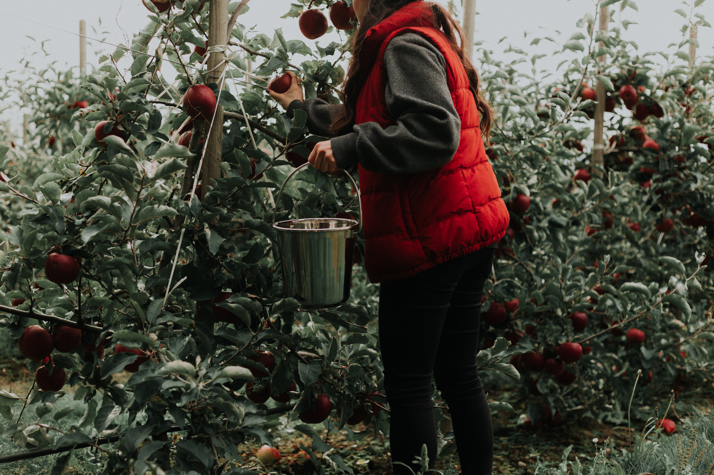

Upcoming Events
September Apple Picking
More Information
Join us for a delightful day of apple picking at Orchard Valley Farm! Embrace the crisp autumn air, the aroma of freshly fallen leaves, and the camaraderie of fellow book lovers.Perfect for families and individuals alike, this event is more than just harvesting delicious apples—it's about creating lasting memories, engaging in thoughtful conversation, and enjoying the simple pleasures of life. Refreshments and picnic areas available.
October Loch Lomond Hike

More Information
Experience the majesty of nature while discussing the latest literary gems on our Loch Lomond Hike! Traverse scenic trails, revel in stunning lake views, and revel in the camaraderie of fellow book enthusiasts. The serene backdrop of Loch Lomond provides the perfect setting for thoughtful discussion and peaceful contemplation. Whether you're an avid hiker or new to the trails, you'll find this outing both invigorating and enlightening. Don't forget your hiking boots, a packed lunch, and of course, your current read for those moments when you want to sit, relax, and get lost in a good book.
November Baking Lesson

More Information
Roll up your sleeves for a delightful Book Club Baking Lesson! Merge your love for literature and the culinary arts as we tackle classic recipes inspired by our favorite reads. Whether you're a seasoned baker or a complete novice, this interactive event promises fun, learning, and of course, delicious treats to enjoy. We'll whisk, knead, and chat about the books that have been filling our shelves and hearts. Don't miss this unique opportunity to bond with fellow book lovers in a cozy, aromatic setting.